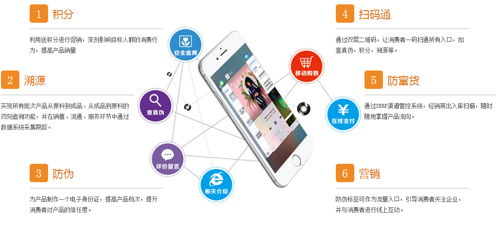

【315快查一物一码】
“一物一码”是基于物联网的二维码技术，为解决商品安全问题打造的防伪溯源平台系统，“315快查平台”信息平台让每一件商品都拥有唯一的、加密的二维码，该二维码不仅是每件商品的身份标识，同时也是一种能被普通智能手机识读的数据格式，结合手机应用、网络平台与后台服务，能够达到产品质量追溯和防伪的功能，同时还可以从每一件商品追溯到每批，然后每批的各个环节，以及通过扫描防伪标签上的二维码能查到商品的原辅材料、产地、上级批发商和下端零售商，二维码中还可以查询产品和品牌的信息，实现商品从生产、 批发、零售、消费全过程可追溯管理，是消费者了解商品安全来龙去脉的“窗口”；“315快查平台”信息平台采用大数据平台，能够更好的掌握和分析消费者的购买习惯，为企业与消费者之间互动带来更好的体验。
传统商品包装的特点是制版印刷，千篇一律。南京安查通信息技术有限公司所拥有的防伪技术使得每一个产品包装都具有独特、不可复制的结构识别特征，再结合个性化的二维码，构成局部纹理防伪标识；把每一张标识拍照，把信息存储在云中心数据库中，这样在互联网环境下用智能手机、pc机等任何通讯设备均可以随时查询。
食品质量安全、假冒伪劣等问题是当今社会顽疾，随着电商商务、移动互联时代的到来，商品销售、品牌传播方式也在发生变化，消费者通过扫描产品包装南京安查通信息技术有限公司标识二维码，可以鉴别产品真伪，放心消费，同时获得来自企业给予的积分奖励等会员优惠；可以提出个性化定制要求，获得称心如意的产品和服务，从而提高消费品质和体验。